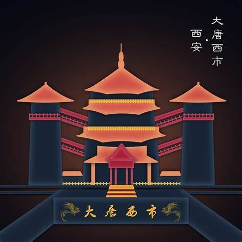

古代建筑是中国文化的重要体现，展现了古人的智慧和审美。它们不仅是居住的场所，更是文化和历史的载体。
建筑风格
游戏中的场景设计融入了中国古代建筑风格，如宫殿、寺庙等，玩家可以在其中探索，感受古代建筑的魅力。
建筑与文化的关系
古代建筑承载着丰富的文化内涵，反映了当时的社会结构和人们的生活方式。它们是历史的见证，也是文化的传承。
古代建筑对现代设计的影响
许多现代建筑设计理念受到古代建筑的启发，强调与自然的和谐和文化的延续。
了解更多
想要深入了解古代建筑的风格和历史，可以参考相关书籍和资料，或访问我们的官方网站获取更多信息。
了解更多